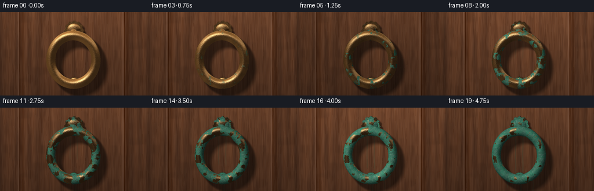
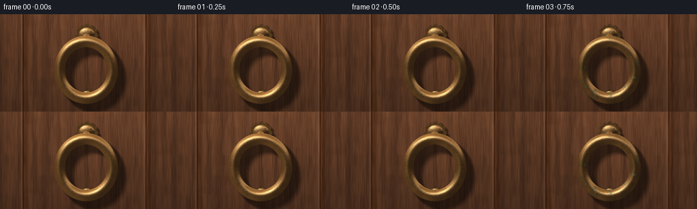

CODING AGENTS AS PIXEL WORLD MODELS
traex/GPT-6.1-Sol · material_0046
点击播放 · 原生 RGB 像素
逐轮保存的候选
回放视频、检查图与代码变化。
每份候选均可单独播放。实际图片检查记录在下方工具轨迹中。
候选 01播放与检查图
点击播放 · 原生 RGB 像素


展开代码变化
--- 上一保存版本
+++ 本次保存版本
@@ -0,0 +1,223 @@
+from pathlib import Path
+import json
+import numpy as np
+from PIL import Image, ImageFilter
+from artifact_io import save
+
+ROOT=Path(__file__).resolve().parent
+SPEC=json.loads((ROOT/'task_spec.json').read_text())
+W,H=SPEC['width'],SPEC['height']
+S=3
+w,h=W*S,H*S
+rng=np.random.default_rng(4629)
+
+def smooth(a,b,x):
+ t=np.clip((x-a)/(b-a),0,1)
+ return t*t*(3-2*t)
+
+def hash3(x,y,z):
+ n=np.sin(x*127.1+y*311.7+z*74.7+19.21)*43758.5453
+ return n-np.floor(n)
+
+def noise(p,f=1):
+ p=p*f
+ i=np.floor(p); q=p-i; q=q*q*(3-2*q)
+ out=np.zeros(p.shape[:-1])
+ for a in (0,1):
+ for b in (0,1):
+ for c in (0,1):
+ wt=(q[...,0] if a else 1-q[...,0])*(q[...,1] if b else 1-q[...,1])*(q[...,2] if c else 1-q[...,2])
+ out+=wt*hash3(i[...,0]+a,i[...,1]+b,i[...,2]+c)
+ return out
+
+def norm(x): return x/np.maximum(np.linalg.norm(x,axis=-1,keepdims=True),1e-7)
+
+# All geometry is analytic. The camera stays fixed throughout the timelapse.
+yy,xx=np.mgrid[0:h,0:w]
+sx=(xx+.5-w/2)*144/w
+sy=(h/2-yy-.5)*81/h
+cam=norm(np.array([.105,.085,1.]))
+right=norm(np.array([1.,0.,-.105]))
+up=np.cross(cam,right)
+origin=sx[...,None]*right+sy[...,None]*up+cam*100
+ray=-cam
+
+def ellipsoid(p,center,radii):
+ q=p-np.array(center)
+ k0=np.linalg.norm(q/np.array(radii),axis=-1)
+ k1=np.linalg.norm(q/(np.array(radii)**2),axis=-1)
+ return k0*(k0-1)/np.maximum(k1,1e-8)
+
+def cylinder_z(p,center,radius,half):
+ q=p-np.array(center)
+ d=np.stack((np.linalg.norm(q[...,:2],axis=-1)-radius,np.abs(q[...,2])-half),axis=-1)
+ return np.minimum(np.maximum(d[...,0],d[...,1]),0)+np.linalg.norm(np.maximum(d,0),axis=-1)
+
+def scene(p,ids=False):
+ x,y,z=p[...,0],p[...,1],p[...,2]
+ # A substantial rounded bronze ring, mounted on an ornate scalloped rosette.
+ q=np.sqrt(x*x+((y+5)/1.075)**2)-22.0
+ ring=np.sqrt(q*q+(z-8.4)**2)-4.45
+ angle=np.arctan2(y-23,x)
+ r=np.sqrt(x*x+(y-23)**2)
+ radius=8.9+.55*np.cos(angle*12)
+ rosette=np.maximum(r-radius,np.abs(z-1.85)-1.45)
+ dome=ellipsoid(p,(0,23,3.0),(6.9,6.9,2.0))
+ # The top pivot overlaps the ring and stands out from the door.
+ pivot=ellipsoid(p,(0,20,6.9),(4.1,4.9,4.0))
+ bar=np.maximum(np.sqrt((y-18.6)**2+(z-8.7)**2)-2.0,np.abs(x)-5.0)
+ # The lower strike disc can be glimpsed under the hanging ring.
+ strike=cylinder_z(p,(0,-28,1.3),5.5,1.1)
+ cap=ellipsoid(p,(0,-28,2.2),(4.8,4.8,1.2))
+ ds=np.stack((ring,rosette,dome,pivot,bar,strike,cap),axis=-1)
+ return (np.min(ds,axis=-1),np.argmin(ds,axis=-1)) if ids else np.min(ds,axis=-1)
+
+# Ray-march the static metal once at supersampled resolution.
+t=np.zeros((h,w))
+active=np.ones((h,w),bool)
+for it in range(105):
+ ix=np.where(active)
+ if not len(ix[0]):break
+ p=origin[ix]+t[ix,None]*ray if False else origin[ix]+t[ix][...,None]*ray
+ d=scene(p)
+ hit=d<.012
+ t[ix]+=np.maximum(d,.006)
+ active[ix]=~hit & (t[ix]<120)
+points=origin+t[...,None]*ray
+metal=(scene(points)<.025)&(points[...,2]>0)
+# Exact planar wood background for every unoccluded ray.
+tplane=-origin[...,2]/ray[2]
+woodp=origin+tplane[...,None]*ray
+P=points[metal]
+_,mid=scene(P,True)
+eps=.035
+normal=np.stack([(scene(P+np.eye(3)[k]*eps)-scene(P-np.eye(3)[k]*eps))/(2*eps) for k in range(3)],axis=-1)
+normal=norm(normal)
+# Static microsurface noise gives scratches, pits, and clustered mineral growth.
+coarse=noise(P+7,.25)
+medium=noise(P+12,.75)
+fine=noise(P+1,3.8)
+micro=noise(P-4,15)
+patch=.57*coarse+.28*medium+.15*fine
+# Corrosion preferentially accumulates beneath lips and around the lower portion.
+patch+=(P[:,1]/65)*.06+.025*normal[:,2]
+patina_seed=np.clip((patch-.27)/.46,0,1)
+# Subtle cast decorative radial engraving into the rosette's shading.
+a=np.arctan2(P[:,1]-23,P[:,0]); rr=np.linalg.norm(P[:,:2]-[0,23],axis=-1)
+engraving=(mid==2)*(smooth(3.2,3.7,rr)*(1-smooth(6.1,6.7,rr)))*(.5+.5*np.cos(a*12+rr*.6))**9
+pits=smooth(.75,.95,micro)*smooth(.52,.7,fine)
+# Normal-map grain (not silhouette distortion).
+grad=np.stack([(noise(P+np.eye(3)[k]*.055,3.8)-noise(P-np.eye(3)[k]*.055,3.8))/.11 for k in range(3)],axis=-1)
+norm_clean=norm(normal+grad*.055)
+norm_old=norm(normal+grad*.15)
+
+# Soft metal shadows on the door; two offsets approximate a large overcast sky light.
+shadow_acc=np.zeros((h,w))
+for L in (norm(np.array([-.48,.68,1.])),norm(np.array([-.62,.81,1.]))):
+ q=woodp.copy(); q[...,2]=.035
+ tt=np.full((h,w),.10); sh=np.ones((h,w))
+ for j in range(65):
+ pos=q+tt[...,None]*L
+ dd=scene(pos)
+ sh=np.minimum(sh,10*np.maximum(dd,0)/tt)
+ tt+=np.clip(dd,.06,2.)
+ shadow_acc+=np.clip(sh,0,1)*.5
+shadow_img=Image.fromarray(np.uint8(shadow_acc*255)).filter(ImageFilter.GaussianBlur(.8*S))
+shadow=np.asarray(shadow_img)/255.
+
+# A century-old outdoor timber door with real procedural long-grain fibers.
+xw,yw=woodp[...,0],woodp[...,1]
+wp=woodp
+large=noise(wp*np.array([.25,.018,1])+[6,2,3],1)
+med=noise(wp*np.array([1.2,.085,1])+[4,2,4],1)
+sm=noise(wp*np.array([3,.13,1])+[9,8,5],1)
+grain=np.sin(xw*7.8+2.8*np.sin(yw*.034+xw*.11)+large*12)
+fiber=(.5+.5*grain)**13
+wood=np.stack((76+large*28+med*15,46+large*18+med*12,30+large*11+med*9),-1)
+wood-=fiber[...,None]*np.array([12,10,7])
+wood+=(sm[...,None]-.5)*8
+# Recessed upright panel molding establishes scale and the door's construction.
+for seam in (-53,49):
+ d=xw-seam
+ wood-=np.exp(-(d/.48)**2)[...,None]*30
+ wood+=np.exp(-((d+1.5)/.7)**2)[...,None]*18
+ wood-=np.exp(-((d-2.8)/1.4)**2)[...,None]*14
+# Distinctively vertical fine fissures in the dry wood.
+crack=((np.sin(xw*3.5+large*1.9)>.991)&(med>.35)).astype(float)
+wood-=crack[...,None]*17
+# Soft reflected ambient illumination and vignette.
+wood*=((.91+.14*sy/40)*(1-.14*(sx/85)**2))[...,None]
+
+# Dappled outdoor shadows drift slowly, indicating years of changing weather.
+leaf=noise(np.stack((sx*.105,sy*.12,np.zeros_like(sx)+6),-1),1)
+leaf2=noise(np.stack((sx*.065+12,sy*.055,np.zeros_like(sx)+9),-1),1)
+
+frames=[]
+for frame in range(SPEC['frames']):
+ age=frame/(SPEC['frames']-1)
+ # Bronze slowly darkens; patches of turquoise carbonate then spread and coalesce.
+ tarnish=smooth(.04,.70,age+.20*(1-patina_seed))
+ growth=smooth(patina_seed-.075,patina_seed+.08,age*.99-.075)
+ growth*=smooth(.05,.26,age)
+ cu=np.array([185.,125.,62.])[None,:]*(1-.42*tarnish[:,None])
+ cu+=((fine-.5)*11+(micro-.5)*6)[:,None]*np.array([1.,.7,.35])
+ green=np.stack((45+medium*30+fine*10,103+coarse*42+fine*16,87+coarse*30+medium*13),-1)
+ # Salty pale green islands over darker, blue-green crevices.
+ bloom=smooth(.46,.75,medium)*smooth(.47,.80,fine)
+ green+=bloom[:,None]*np.array([20,26,18])
+ base=cu*(1-growth[:,None])+green*growth[:,None]
+ N=norm(norm_clean*(1-growth[:,None])+norm_old*growth[:,None])
+ L=norm(np.array([-.58+.075*np.sin(frame*.72),.78,1.]))
+ ndl=np.maximum(N@L,0)
+ # Broad sky reflections roll around the curved brass, fading as oxide roughens it.
+ ref=2*(N@cam)[:,None]*N-cam
+ sky=smooth(-.08,.70,ref[:,1])
+ env=.30+.47*sky+.18*smooth(-.3,.6,-ref[:,0])
+ diffuse=.29+.68*ndl
+ shade=(1-growth)*env+growth*diffuse
+ metalrgb=base*shade[:,None]
+ hv=norm(L+cam)
+ gloss=np.maximum(N@hv,0)
+ spec=gloss**(40-26*growth)
+ metalrgb+=spec[:,None]*(1-growth*.87)[:,None]*np.array([148,131,101])[None,:]
+ metalrgb+=((1-growth)*smooth(.25,.50,ref[:,1])*(1-smooth(.61,.78,ref[:,1])))[:,None]*np.array([30,30,28])
+ metalrgb-=engraving[:,None]*np.array([25,21,12])
+ metalrgb*=1-(pits*(.08+.30*age))[:,None]
+ # Warm thin rubbed edges remain copper among the aged green surface.
+ edge_polish=(1-smooth(.14,.27,normal[:,2]))*.14*growth
+ metalrgb=metalrgb*(1-edge_polish[:,None])+cu*edge_polish[:,None]
+ day=1+.065*np.sin(frame*.91)+.035*np.cos(frame*1.61)
+ out=wood.copy()
+ # Weather leaves increasingly long mineral runoff traces below the fittings.
+ runoff=(np.exp(-((xw-1)/2.7)**2)*smooth(-23,-29,yw) if False else np.zeros_like(xw))
+ for x0,top,length,wide in [(-4,19,41,.55),(3,20,43,.6),(-12,-22,14,.38),(13,-21,18,.46),(1,-29,18,.72)]:
+ length*=.2+.8*age
+ streak=np.exp(-((xw-x0-.20*np.sin(yw*.33))/wide)**2)*(1-smooth(top-length-3,top-length,yw))*0
+ # Positive mask below the origin and above the advancing drip tip.
+ streak=np.exp(-((xw-x0-.15*np.sin(yw*.3))/wide)**2)*smooth(top-length-3,top-length,yw)*(1-smooth(top-1,top+1,yw))
+ strength=streak*age*.27
+ out=out*(1-strength[...,None])+np.array([44,74,57])*strength[...,None]
+ dapple=1-.055*smooth(.46,.75,leaf+.055*np.sin(frame*.6))*smooth(.34,.65,leaf2)
+ out*=((.50+.50*shadow)*dapple*day)[...,None]
+ out[metal]=metalrgb*day
+ # Two brief wet spells, not distracting from the accumulating corrosion.
+ wet=max(0,1-abs(frame-6)/1.5)*.55+max(0,1-abs(frame-13)/1.5)*.5
+ if wet>0:
+ out*=1-.05*wet
+ drops=smooth(.85,.94,noise(wp*np.array([4,.45,1])+[1,2,6],1))
+ out+=drops[...,None]*wet*np.array([14,17,18])
+ # Thin translucent falling rain; deterministic but different each wet frame.
+ rain_img=Image.new('RGB',(w,h)); from PIL import ImageDraw
+ draw=ImageDraw.Draw(rain_img)
+ rain_rng=np.random.default_rng(80+frame)
+ for _ in range(22):
+ rx=int(rain_rng.uniform(0,w)); ry=int(rain_rng.uniform(0,h))
+ le=int(rain_rng.uniform(3,10)*S)
+ draw.line((rx,ry,rx-2*S,ry+le),fill=(15,19,21),width=1)
+ out+=np.asarray(rain_img)*wet
+ out=np.clip(out,0,255).astype(np.uint8)
+ img=Image.fromarray(out).resize((W,H),Image.Resampling.LANCZOS)
+ frames.append(np.asarray(img))
+frames=np.stack(frames).astype(np.uint8)
+save(frames,ROOT)
+print('Saved',frames.shape,'RGB frames')
可观测工具轨迹
实际执行的命令与返回图片。
命令 1exit 0
/bin/bash -lc 'ls -la; cat prompt.txt; cat GENERATION_RULES.md; cat task_spec.json'
命令 2exit 0
/bin/bash -lc 'cat artifact_io.py'
命令 3exit 0
/bin/bash -lc "python - <<'PY' import importlib.util for p in ['numpy','PIL','scipy']: print(p, bool(importlib.util.find_spec(p))) PY"
命令 4exit 0
/bin/bash -lc "cat > generate.py <<'PY'
from pathlib import Path
import json
import numpy as np
from PIL import Image, ImageFilter
from artifact_io import save
ROOT=Path(__file__).resolve().parent
SPEC=json.loads((ROOT/'task_spec.json').read_text())
W,H=SPEC['width'],SPEC['height']
S=3
w,h=W*S,H*S
rng=np.random.default_rng(4629)
def smooth(a,b,x):
t=np.clip((x-a)/(b-a),0,1)
return t*t*(3-2*t)
def hash3(x,y,z):
n=np.sin(x*127.1+y*311.7+z*74.7+19.21)*43758.5453
return n-np.floor(n)
def noise(p,f=1):
p=p*f
i=np.floor(p); q=p-i; q=q*q*(3-2*q)
out=np.zeros(p.shape[:-1])
for a in (0,1):
for b in (0,1):
for c in (0,1):
wt=(q[...,0] if a else 1-q[...,0])*(q[...,1] if b else 1-q[...,1])*(q[...,2] if c else 1-q[...,2])
out+=wt*hash3(i[...,0]+a,i[...,1]+b,i[...,2]+c)
return out
def norm(x): return x/np.maximum(np.linalg.norm(x,axis=-1,keepdims=True),1e-7)
# All geometry is analytic. The camera stays fixed throughout the timelapse.
yy,xx=np.mgrid[0:h,0:w]
sx=(xx+.5-w/2)*144/w
sy=(h/2-yy-.5)*81/h
cam=norm(np.array([.105,.085,1.]))
right=norm(np.array([1.,0.,-.105]))
up=np.cross(cam,right)
origin=sx[...,None]*right+sy[...,None]*up+cam*100
ray=-cam
def ellipsoid(p,center,radii):
q=p-np.array(center)
k0=np.linalg.norm(q/np.array(radii),axis=-1)
k1=np.linalg.norm(q/(np.array(radii)**2),axis=-1)
return k0*(k0-1)/np.maximum(k1,1e-8)
def cylinder_z(p,center,radius,half):
q=p-np.array(center)
d=np.stack((np.linalg.norm(q[...,:2],axis=-1)-radius,np.abs(q[...,2])-half),axis=-1)
return np.minimum(np.maximum(d[...,0],d[...,1]),0)+np.linalg.norm(np.maximum(d,0),axis=-1)
def scene(p,ids=False):
x,y,z=p[...,0],p[...,1],p[...,2]
# A substantial rounded bronze ring, mounted on an ornate scalloped rosette.
q=np.sqrt(x*x+((y+5)/1.075)**2)-22.0
ring=np.sqrt(q*q+(z-8.4)**2)-4.45
angle=np.arctan2(y-23,x)
r=np.sqrt(x*x+(y-23)**2)
radius=8.9+.55*np.cos(angle*12)
rosette=np.maximum(r-radius,np.abs(z-1.85)-1.45)
dome=ellipsoid(p,(0,23,3.0),(6.9,6.9,2.0))
# The top pivot overlaps the ring and stands out from the door.
pivot=ellipsoid(p,(0,20,6.9),(4.1,4.9,4.0))
bar=np.maximum(np.sqrt((y-18.6)**2+(z-8.7)**2)-2.0,np.abs(x)-5.0)
# The lower strike disc can be glimpsed under the hanging ring.
strike=cylinder_z(p,(0,-28,1.3),5.5,1.1)
cap=ellipsoid(p,(0,-28,2.2),(4.8,4.8,1.2))
ds=np.stack((ring,rosette,dome,pivot,bar,strike,cap),axis=-1)
return (np.min(ds,axis=-1),np.argmin(ds,axis=-1)) if ids else np.min(ds,axis=-1)
# Ray-march the static metal once at supersampled resolution.
t=np.zeros((h,w))
active=np.ones((h,w),bool)
for it in range(105):
ix=np.where(active)
if not len(ix[0]):break
p=origin[ix]+t[ix,None]*ray if False else origin[ix]+t[ix][...,None]*ray
d=scene(p)
hit=d<.012
t[ix]+=np.maximum(d,.006)
active[ix]=~hit & (t[ix]<120)
points=origin+t[...,None]*ray
metal=(scene(points)<.025)&(points[...,2]>0)
# Exact planar wood background for every unoccluded ray.
tplane=-origin[...,2]/ray[2]
woodp=origin+tplane[...,None]*ray
P=points[metal]
_,mid=scene(P,True)
eps=.035
normal=np.stack([(scene(P+np.eye(3)[k]*eps)-scene(P-np.eye(3)[k]*eps))/(2*eps) for k in range(3)],axis=-1)
normal=norm(normal)
# Static microsurface noise gives scratches, pits, and clustered mineral growth.
coarse=noise(P+7,.25)
medium=noise(P+12,.75)
fine=noise(P+1,3.8)
micro=noise(P-4,15)
patch=.57*coarse+.28*medium+.15*fine
# Corrosion preferentially accumulates beneath lips and around the lower portion.
patch+=(P[:,1]/65)*.06+.025*normal[:,2]
patina_seed=np.clip((patch-.27)/.46,0,1)
# Subtle cast decorative radial engraving into the rosette's shading.
a=np.arctan2(P[:,1]-23,P[:,0]); rr=np.linalg.norm(P[:,:2]-[0,23],axis=-1)
engraving=(mid==2)*(smooth(3.2,3.7,rr)*(1-smooth(6.1,6.7,rr)))*(.5+.5*np.cos(a*12+rr*.6))**9
pits=smooth(.75,.95,micro)*smooth(.52,.7,fine)
# Normal-map grain (not silhouette distortion).
grad=np.stack([(noise(P+np.eye(3)[k]*.055,3.8)-noise(P-np.eye(3)[k]*.055,3.8))/.11 for k in range(3)],axis=-1)
norm_clean=norm(normal+grad*.055)
norm_old=norm(normal+grad*.15)
# Soft metal shadows on the door; two offsets approximate a large overcast sky light.
shadow_acc=np.zeros((h,w))
for L in (norm(np.array([-.48,.68,1.])),norm(np.array([-.62,.81,1.]))):
q=woodp.copy(); q[...,2]=.035
tt=np.full((h,w),.10); sh=np.ones((h,w))
for j in range(65):
pos=q+tt[...,None]*L
dd=scene(pos)
sh=np.minimum(sh,10*np.maximum(dd,0)/tt)
tt+=np.clip(dd,.06,2.)
shadow_acc+=np.clip(sh,0,1)*.5
shadow_img=Image.fromarray(np.uint8(shadow_acc*255)).filter(ImageFilter.GaussianBlur(.8*S))
shadow=np.asarray(shadow_img)/255.
# A century-old outdoor timber door with real procedural long-grain fibers.
xw,yw=woodp[...,0],woodp[...,1]
wp=woodp
large=noise(wp*np.array([.25,.018,1])+[6,2,3],1)
med=noise(wp*np.array([1.2,.085,1])+[4,2,4],1)
sm=noise(wp*np.array([3,.13,1])+[9,8,5],1)
grain=np.sin(xw*7.8+2.8*np.sin(yw*.034+xw*.11)+large*12)
fiber=(.5+.5*grain)**13
wood=np.stack((76+large*28+med*15,46+large*18+med*12,30+large*11+med*9),-1)
wood-=fiber[...,None]*np.array([12,10,7])
wood+=(sm[...,None]-.5)*8
# Recessed upright panel molding establishes scale and the door's construction.
for seam in (-53,49):
d=xw-seam
wood-=np.exp(-(d/.48)**2)[...,None]*30
wood+=np.exp(-((d+1.5)/.7)**2)[...,None]*18
wood-=np.exp(-((d-2.8)/1.4)**2)[...,None]*14
# Distinctively vertical fine fissures in the dry wood.
crack=((np.sin(xw*3.5+large*1.9)>.991)&(med>.35)).astype(float)
wood-=crack[...,None]*17
# Soft reflected ambient illumination and vignette.
wood*=((.91+.14*sy/40)*(1-.14*(sx/85)**2))[...,None]
# Dappled outdoor shadows drift slowly, indicating years of changing weather.
leaf=noise(np.stack((sx*.105,sy*.12,np.zeros_like(sx)+6),-1),1)
leaf2=noise(np.stack((sx*.065+12,sy*.055,np.zeros_like(sx)+9),-1),1)
frames=[]
for frame in range(SPEC['frames']):
age=frame/(SPEC['frames']-1)
# Bronze slowly darkens; patches of turquoise carbonate then spread and coalesce.
tarnish=smooth(.04,.70,age+.20*(1-patina_seed))
growth=smooth(patina_seed-.075,patina_seed+.08,age*.99-.075)
growth*=smooth(.05,.26,age)
cu=np.array([185.,125.,62.])[None,:]*(1-.42*tarnish[:,None])
cu+=((fine-.5)*11+(micro-.5)*6)[:,None]*np.array([1.,.7,.35])
green=np.stack((45+medium*30+fine*10,103+coarse*42+fine*16,87+coarse*30+medium*13),-1)
# Salty pale green islands over darker, blue-green crevices.
bloom=smooth(.46,.75,medium)*smooth(.47,.80,fine)
green+=bloom[:,None]*np.array([20,26,18])
base=cu*(1-growth[:,None])+green*growth[:,None]
N=norm(norm_clean*(1-growth[:,None])+norm_old*growth[:,None])
L=norm(np.array([-.58+.075*np.sin(frame*.72),.78,1.]))
ndl=np.maximum(N@L,0)
# Broad sky reflections roll around the curved brass, fading as oxide roughens it.
ref=2*(N@cam)[:,None]*N-cam
sky=smooth(-.08,.70,ref[:,1])
env=.30+.47*sky+.18*smooth(-.3,.6,-ref[:,0])
diffuse=.29+.68*ndl
shade=(1-growth)*env+growth*diffuse
metalrgb=base*shade[:,None]
hv=norm(L+cam)
gloss=np.maximum(N@hv,0)
spec=gloss**(40-26*growth)
metalrgb+=spec[:,None]*(1-growth*.87)[:,None]*np.array([148,131,101])[None,:]
metalrgb+=((1-growth)*smooth(.25,.50,ref[:,1])*(1-smooth(.61,.78,ref[:,1])))[:,None]*np.array([30,30,28])
metalrgb-=engraving[:,None]*np.array([25,21,12])
metalrgb*=1-(pits*(.08+.30*age))[:,None]
# Warm thin rubbed edges remain copper among the aged green surface.
edge_polish=(1-smooth(.14,.27,normal[:,2]))*.14*growth
metalrgb=metalrgb*(1-edge_polish[:,None])+cu*edge_polish[:,None]
day=1+.065*np.sin(frame*.91)+.035*np.cos(frame*1.61)
out=wood.copy()
# Weather leaves increasingly long mineral runoff traces below the fittings.
runoff=(np.exp(-((xw-1)/2.7)**2)*smooth(-23,-29,yw) if False else np.zeros_like(xw))
for x0,top,length,wide in [(-4,19,41,.55),(3,20,43,.6),(-12,-22,14,.38),(13,-21,18,.46),(1,-29,18,.72)]:
length*=.2+.8*age
streak=np.exp(-((xw-x0-.20*np.sin(yw*.33))/wide)**2)*(1-smooth(top-length-3,top-length,yw))*0
# Positive mask below the origin and above the advancing drip tip.
streak=np.exp(-((xw-x0-.15*np.sin(yw*.3))/wide)**2)*smooth(top-length-3,top-length,yw)*(1-smooth(top-1,top+1,yw))
strength=streak*age*.27
out=out*(1-strength[...,None])+np.array([44,74,57])*strength[...,None]
dapple=1-.055*smooth(.46,.75,leaf+.055*np.sin(frame*.6))*smooth(.34,.65,leaf2)
out*=((.50+.50*shadow)*dapple*day)[...,None]
out[metal]=metalrgb*day
# Two brief wet spells, not distracting from the accumulating corrosion.
wet=max(0,1-abs(frame-6)/1.5)*.55+max(0,1-abs(frame-13)/1.5)*.5
if wet>0:
out*=1-.05*wet
drops=smooth(.85,.94,noise(wp*np.array([4,.45,1])+[1,2,6],1))
out+=drops[...,None]*wet*np.array([14,17,18])
# Thin translucent falling rain; deterministic but different each wet frame.
rain_img=Image.new('RGB',(w,h)); from PIL import ImageDraw
draw=ImageDraw.Draw(rain_img)
rain_rng=np.random.default_rng(80+frame)
for _ in range(22):
rx=int(rain_rng.uniform(0,w)); ry=int(rain_rng.uniform(0,h))
le=int(rain_rng.uniform(3,10)*S)
draw.line((rx,ry,rx-2*S,ry+le),fill=(15,19,21),width=1)
out+=np.asarray(rain_img)*wet
out=np.clip(out,0,255).astype(np.uint8)
img=Image.fromarray(out).resize((W,H),Image.Resampling.LANCZOS)
frames.append(np.asarray(img))
frames=np.stack(frames).astype(np.uint8)
save(frames,ROOT)
print('Saved',frames.shape,'RGB frames')
PY
python generate.py"命令 5exit 1
/bin/bash -lc "ls -lh pixels.npz index.html inspection.png frames/00.png frames/19.png; python - <<'PY'
import numpy as np
from PIL import Image
p=np.load('pixels.npz')['pixels']
print('Packed tensor:',p.shape,p.dtype)
a=np.array(Image.open('frames/00.png')).astype(float)
b=np.array(Image.open('frames/19.png')).astype(float)
print('Initial RGB mean:',a.mean((0,1)).round(1),'Final:',b.mean((0,1)).round(1))
print('Mean temporal change:',np.abs(a-b).mean().round(2))
PY
command -v ffmpeg"保存候选 1 份；完成命令 5 次；可验证图片返回 0 张。原始 API 响应与完整日志保留在本地。